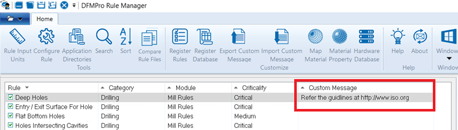
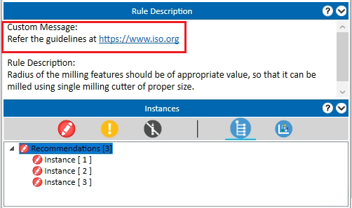
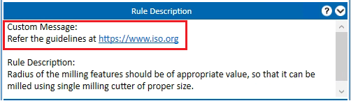

ユーザーは、ルールマネージャーダイアログボックスでカスタムメッセージ／ルール重要度メッセージを構成できます。業界標準や設計標準（通常、部品設計時に参照されるもの）、または設計エンジニアの参照用として組織固有のドキュメントやガイドラインに関連するカスタムメッセージを追加する必要がある場合、カスタムメッセージ機能を使用すると、重要なメッセージや標準の URL リンクを、以下に示すようにカスタムメッセージ列へ追加できます。

結果には、追加された URL リンクがルール説明グループボックスに表示されます。設計エンジニアは、これを参照ガイドラインとして開くことができます。

書き込み権限を持つユーザーのみがカスタムメッセージを追加できます。追加されたメッセージは DFMPro データベースに保存され、書き込み権限を持つユーザーのみがアクセス可能です。
ルールマネージャー ダイアログボックスを開きます。
各ルールに対してカスタムメッセージや情報を入力し、DFMPro データベースに保存します。
以下に示すコマンドを使用して、各ルールに追加したカスタムメッセージを保存またはインポートします：
ルールマネージャーダイアログボックスで利用可能なルールに基づき、テンプレート「CustomMessageTemplate.xlsx」が Excel ファイルとしてエクスポートされます。
DFMPro では、各ルールの カスタムメッセージ列 にカスタムメッセージを追加し、保存することができます。
対応するカスタムメッセージが、ルールマネージャーダイアログボックスに表示されます。
カスタムメッセージに入力された情報は、DFMPro データベースに保存されます。
追加されたカスタムメッセージは、結果ウィンドウのルール説明グループボックスに表示されます（以下で強調表示）。同じカスタムメッセージは DFMPro レポートにも表示されます。

注記:
標準のカスタムテンプレートを使用し、テンプレート内のテキストを変更または削除しないでください。
カスタムメッセージ列には最大 256 文字まで入力できます。カスタムメッセージを追加する際は、複数行のテキストは避けてください。
カスタムメッセージには、URL リンク（Web リンク、HTML ドキュメントリンク、リポジトリ、またはネットワーク上のパス）を追加できます。
URL リンクの場合、テキストはハイパーリンク形式である必要があります。「www」「http」「https」「\\」などのすべての標準的な URL 形式のハイパーリンクがサポートされています。